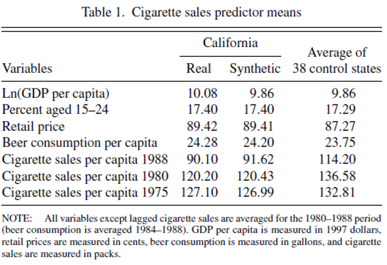
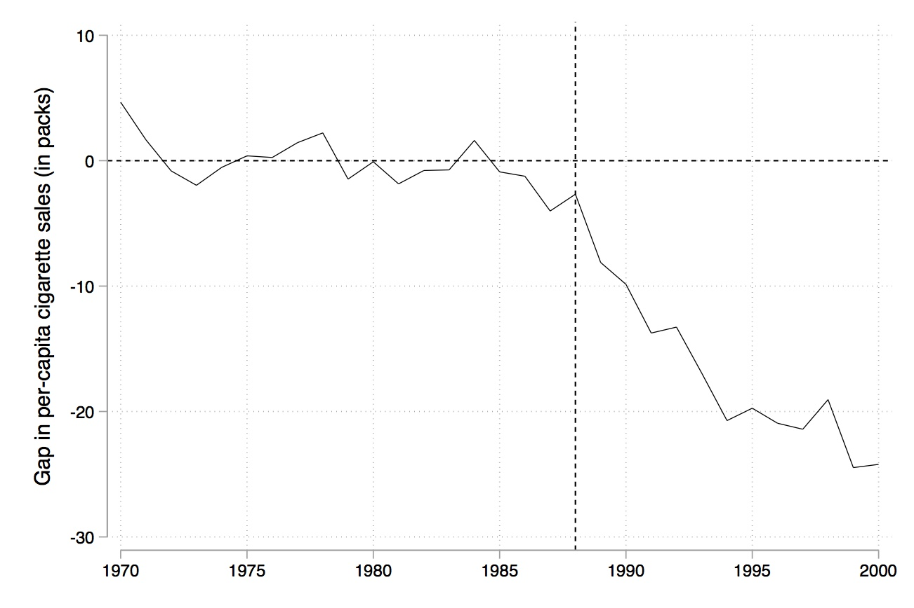
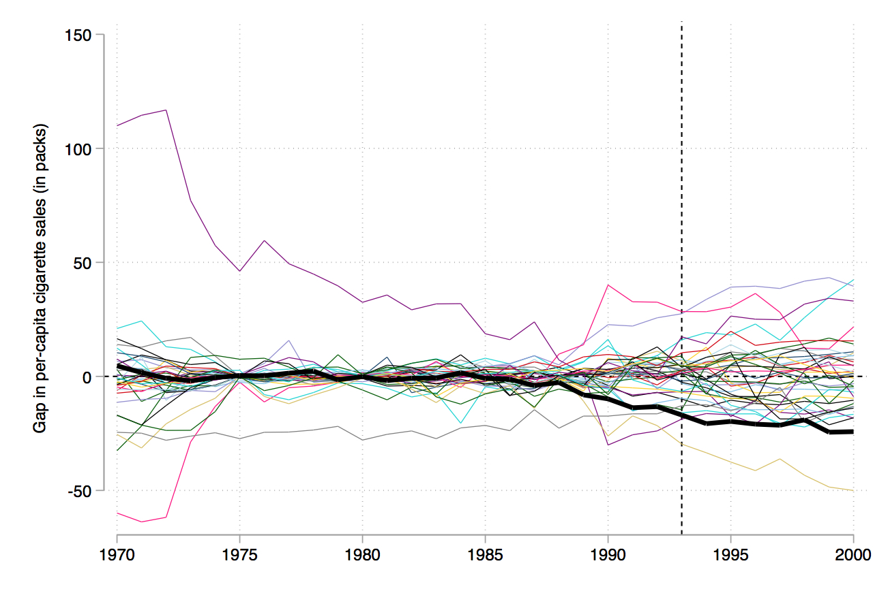
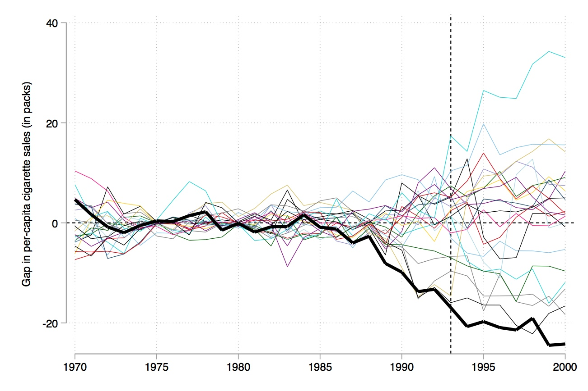

Of course, again, we cannot observe both potential outcomes of the same unit i.
Selection Bias
When dealing with causal inference, we have to find ways to approximate what the hidden potential outcome of the treated units is.
That is, the challenge in identifying causal effects is that the untreated potential outcomes, \(Y_{i,0}\), are never observed for the treated group (\(D_i= 1\)). The “second” term in the following equation:
We need an empirical design to “observe” what we do not really observe (i.e., the counterfactual).
Selection Bias
Many options:
Matching/Balancing
Difference-in-differences (DiD)
Instrumental variables
Regression discontinuity design (RDD)
Synthetic control (Synth)
Selection Bias
The process of finding units that are comparable is called matching.
Before we continue…
We will match on observables. We cannot be on unobservables.
Thus, you may want to write in your article “selection bias due to observables”.
Cunningham:
Propensity score matching has not seen as wide adoption among economists as in other nonexperimental methods like regression discontinuity or difference-in-differences. The most common reason given for this is that economists are oftentimes skeptical that CIA can be achieved in any dataset almost as an article of faith. This is because for many applications, economists as a group are usually more concerned about selection on unobservables than they are selection on observables, and as such, they reach for matching methods less often.
CIA = CMI
Matching
Matching
Matching aims to compare the outcomes between observations that have the same values of all control variables, except that one unit is treated and the other is not.
In this literature, the control variables used to matched are often called covariates.
That is, for each treated unit, the researcher finds an untreated unit that is similar in all covariates.
The implication is that the researcher can argue that “units are comparable after matching”.
Matching
The easiest to see is exact matching: it matches observations that have the exact same values.
It might be doable if you have only one covariate.
Naturally, if you have only one covariate, you might still be left with some selection bias.
In the previous example, health history is one important covariate that makes John and Mary different.
But what about life style? Nutrition? Etc.
As the number of covariates grow, you cannot pursue exact matching. That is the job of PSM.
Matching
In exact matching, the causal effect estimator (ATET) is:
Where \(Y_{j(i)}\) is the j-th unit matched to the i-th unit based on the j-th being “closest to” the i-th unit for some covariate.
For instance, let’s say that a unit in the treatment group has a covariate with a value of 2 and we find another unit in the control group (exactly one unit) with a covariate value of 2.
Then we will impute the treatment unit’s missing counterfactual with the matched unit’s, and take a difference.
The problem with this measure of distance is that the distance measure itself depends on the scale of the variables themselves.
For this reason, researchers typically will use some modification of the Euclidean distance, such as the normalized Euclidean distance, or they’ll use a wholly different alternative distance.
The normalized Euclidean distance is a commonly used distance, and what makes it different is that the distance of each variable is scaled by the variable’s variance.
Where \(\hat{\sum_x}\) is the sample covariance matrix of X.
Distance Matching
Distance matching only goes so far…
… the larger the dimensionality, the harder is to use distance matching.
As sample size increases, for a given N of covariates, the matching discrepancies tend to zero.
But, the more covariates, the longer it takes.
At the end of the day, it is preferable to have many covariates, but it is makes distance matching harder.
Coarsened Exact Matching (CER)
Coarsened Exact Matching (CER)
In coarsened exact matching, something only counts as a match if it exactly matches on each matching variable.
The “coarsened” part comes in because, if you have any continuous variables to match on, you need to “coarsen” them first by putting them into bins, rather than matching on exact values.
Coarsening means creating bins. Fewer bins makes exact matches more likely.
CER is not used much in empirical research in finance. It is used more in the big data realm when you have many variables to match.
Propensity-score matching (PSM)
Propensity-score matching (PSM)
PSM is one way to matching using many covariates.
PSM aggregates all covariates into one score (propensity-score), which is the likelihood of receiving the treatment.
The idea is to match units that, based on observables, have the same probability (called propensity-score) of being treated.
The idea is to estimate a probit (default in stata) or logit model (fist stage):
\[P(D=1|X)\]
The propensity-score is the predicted probability of a unit being treated given all covariates X. The p-score is just a single number.
Propensity-score matching (PSM)
Considerations in PSM.
How many neighbors to match?
Nearest neighbor, radius or kernel?
With or without replacement?
With or without common support?
Common support: imposes a common support by dropping treatment observations whose pscore is higher than the maximum or less than the minimum pscore of the controls.
It is expected that, after PSM, you show the overlap of propensity-scores.
Kernel matching: Each treated observation i is matched with several control observations, with weights inversely proportional to the distance between treated and control observations.
use files/cps1re74.dta, clearqui estpost tabstat age black educ , by(treat) c(s) s(me v sk n) nototalesttab . ,varwidth(20) cells("mean(fmt(3)) variance(fmt(3)) skewness(fmt(3)) count(fmt(0))") noobs nonumber compress
(DW Subset of LaLonde Data)
------------------------------------------------------------
mean variance skewness count
------------------------------------------------------------
0
age 33.225 121.997 0.348 15992
black 0.074 0.068 3.268 15992
educ 12.028 8.242 -0.423 15992
------------------------------------------------------------
1
age 25.816 51.194 1.115 185
black 0.843 0.133 -1.888 185
educ 10.346 4.043 -0.721 185
------------------------------------------------------------
Example
Clearly, the treated group is younger, mainly black, and less educated.
Also note that the variance and skewness of the two subsamples are different.
If we were to use these two subsamples in any econometric analysis without preprocessing to make them comparable, we would likely have coefficients biased by selection bias.
Therefore, it is important to perform some matching method.
Let’s start with Propensity Score Matching (PSM). We will use the simplest matching, that is, without using any additional functions.
# install.packages("MatchIt")library(haven)library(psych)library(MatchIt)data <-read_dta("files/cps1re74.dta")model <-matchit(treat ~ age + black + educ, data = data, method ="nearest")summary(model)
Call:
matchit(formula = treat ~ age + black + educ, data = data, method = "nearest")
Summary of Balance for All Data:
Means Treated Means Control Std. Mean Diff. Var. Ratio eCDF Mean
distance 0.1445 0.0099 1.3615 7.5662 0.4987
age 25.8162 33.2252 -1.0355 0.4196 0.1863
black 0.8432 0.0735 2.1171 . 0.7697
educ 10.3459 12.0275 -0.8363 0.4905 0.0908
eCDF Max
distance 0.7741
age 0.3427
black 0.7697
educ 0.4123
Summary of Balance for Matched Data:
Means Treated Means Control Std. Mean Diff. Var. Ratio eCDF Mean
distance 0.1445 0.1443 0.0020 1.0039 0.0002
age 25.8162 25.7081 0.0151 0.9244 0.0073
black 0.8432 0.8432 0.0000 . 0.0000
educ 10.3459 10.4054 -0.0296 0.7190 0.0117
eCDF Max Std. Pair Dist.
distance 0.0162 0.0029
age 0.0270 0.1481
black 0.0000 0.0000
educ 0.0432 0.2554
Sample Sizes:
Control Treated
All 15992 185
Matched 185 185
Unmatched 15807 0
Discarded 0 0
Stata
use files/cps1re74.dta, clearpsmatch2 treat age black educ , n(1) noreplacementsum _weight , d
# install.packages("MatchIt")library(haven)library(MatchIt)data <-read_dta("files/cps1re74.dta")model <-matchit(treat ~ age + black + educ, data = data, method ="exact")summary(model$weights)
Min. 1st Qu. Median Mean 3rd Qu. Max.
0.0000 0.0000 0.0000 0.1457 0.0000 52.7952
Stata
use files/cps1re74.dta, clearqui psmatch2 treat age black educ , kernelsum _weight , d
(DW Subset of LaLonde Data)
psmatch2: weight of matched controls
-------------------------------------------------------------
Percentiles Smallest
1% .0024355 .0007862
5% .0024375 .0024348
10% .00244 .0024348 Obs 16,177
25% .0024517 .0024348 Sum of wgt. 16,177
50% .0024919 Mean .022872
Largest Std. dev. .1130791
75% .0026476 1
90% .0038379 1 Variance .0127869
95% .0876547 1 Skewness 7.604874
99% 1 1 Kurtosis 64.26276
use files/cps1re74.dta, clearqui psmatch2 treat age black educ , kernelqui estpost tabstat age black educ [aweight = _weight], by(treat) c(s) s(me v sk n) nototalesttab . ,varwidth(20) cells("mean(fmt(3)) variance(fmt(3)) skewness(fmt(3)) count(fmt(0))") noobs nonumber compress
(DW Subset of LaLonde Data)
------------------------------------------------------------
mean variance skewness count
------------------------------------------------------------
0
age 27.033 85.548 1.077 15992
black 0.791 0.165 -1.434 15992
educ 10.710 8.146 -0.883 15992
------------------------------------------------------------
1
age 25.816 51.194 1.115 185
black 0.843 0.133 -1.888 185
educ 10.346 4.043 -0.721 185
------------------------------------------------------------
Entropy Balancing
Entropy Balancing
Here, instead of matching units, we reweight the observations such that the moments of the distributions (mean, variance, skewness) are similar.
The ebalance function implements a reweighting scheme. The user starts by choosing the covariates that should be included in the reweighting.
For each covariate, the user then specifies a set of balance constraints (in Equation 5) to equate the moments of the covariate distribution between the treatment and the reweighted control group.
The moment constraints may include the mean (first moment), the variance (second moment), and the skewness (third moment).
The outcome is a vector containing the weights to weight the observations, such that the weighted average, weighted variance, and weighted skewness of the covariates in control group are similar to those in the treatment group
# means in treatment group dataapply(vars[treatment==1,],2,mean)
[1] 25.8162162 10.3459459 0.8432432
R
# means in reweighted control group dataapply(vars[treatment==0,],2,weighted.mean,w=eb$w)
[1] 25.8163688 10.3460391 0.8431526
R
# means in raw data control group dataapply(vars[treatment==0,],2,mean)
[1] 33.22523762 12.02751376 0.07353677
Stata
use files/cps1re74.dta, clearebalance treat age black educ, targets(3)
(DW Subset of LaLonde Data)
Data Setup
Treatment variable: treat
Covariate adjustment: age black educ (1st order). age black educ (2nd order). a
> ge black educ (3rd order).
Optimizing...
Iteration 1: Max Difference = 580799.347
Iteration 2: Max Difference = 213665.688
Iteration 3: Max Difference = 78604.7628
Iteration 4: Max Difference = 28918.6249
Iteration 5: Max Difference = 10640.1108
Iteration 6: Max Difference = 3915.82197
Iteration 7: Max Difference = 1442.09731
Iteration 8: Max Difference = 532.07826
Iteration 9: Max Difference = 197.376777
Iteration 10: Max Difference = 74.6380533
Iteration 11: Max Difference = 29.9524313
Iteration 12: Max Difference = 11.4337344
Iteration 13: Max Difference = 4.43722698
Iteration 14: Max Difference = 1.76899046
Iteration 15: Max Difference = .420548538
Iteration 16: Max Difference = .037814194
Iteration 17: Max Difference = .001164231
maximum difference smaller than the tolerance level; convergence achieved
Treated units: 185 total of weights: 185
Control units: 15992 total of weights: 185
Before: without weighting
| Treat | Control
| mean variance skewness | mean variance
-------------+---------------------------------+----------------------
age | 25.82 51.19 1.115 | 33.23 122
black | .8432 .1329 -1.888 | .07354 .06813
educ | 10.35 4.043 -.7212 | 12.03 8.242
| Control
| skewness
-------------+-----------
age | .3478
black | 3.268
educ | -.4233
After: _webal as the weighting variable
| Treat | Control
| mean variance skewness | mean variance
-------------+---------------------------------+----------------------
age | 25.82 51.19 1.115 | 25.8 51.17
black | .8432 .1329 -1.888 | .8421 .133
educ | 10.35 4.043 -.7212 | 10.34 4.04
| Control
| skewness
-------------+-----------
age | 1.122
black | -1.877
educ | -.7121
use files/cps1re74.dta, clearqui ebalance treat age black educ, targets(3)qui estpost tabstat age black educ [aweight = _webal], by(treat) c(s) s(me v sk n) nototalesttab . ,varwidth(20) cells("mean(fmt(3)) variance(fmt(3)) skewness(fmt(3)) count(fmt(0))") noobs nonumber compress
(DW Subset of LaLonde Data)
------------------------------------------------------------
mean variance skewness count
------------------------------------------------------------
0
age 25.801 51.167 1.122 15992
black 0.842 0.133 -1.877 15992
educ 10.340 4.040 -0.712 15992
------------------------------------------------------------
1
age 25.816 51.194 1.115 185
black 0.843 0.133 -1.888 185
educ 10.346 4.043 -0.721 185
------------------------------------------------------------
DiD Introduction
DiD Introduction
Let’s introduce DiD using the most famous example in the topic: John Snow’s 1855 findings that demonstrated to the world that cholera was spread by fecally-contaminated water and not via the air (Snow 1855)
Snow compared the periods of 1849 and 1854 to analyze the impact of a change in London’s water supply dynamics.
Various water companies, each drawing water from different sections of the Thames river, served the city’s water needs.
The downstream areas of the Thames, where some companies sourced their water, were susceptible to contamination due to the disposal of various substances, including fecal matter from cholera-infected individuals.
In the interim between 1849 and 1854, a pivotal policy was implemented: the Lambeth Company was mandated by an Act of Parliament to relocate its water intake upstream of London.
DiD Introduction
This is what happened.
Region Supplier
Death Rates 1849
Death Rates 1854
Non-Lambeth Only (Dirty)
134.9
146.6
Lambeth + Others (Mix Dirty and Clean)
130.1
84.9
The specific DID estimate we can get here is:
\((84.9-130.1)-(146.9-134.9)=-57.2\).
This resembles a “modern” DiD.
Shocks
Shocks
Shock-based designs use an external shock to limit selection bias.
They are very hard to find, but if you do, you can reasonably estimate causal effects.
They are sources of exogenous variations in the X, which are crucial to causality when we have some of the problems discussed before.
A shock is often considered the first-best solution to causal inference (randomized control trials are the second-best).
In social sciences, we cannot have randomized control trials. It is not feasible to have experiments.
That is why we often explore the idea of “Natural experiments” or “Natural shocks” (I often use the terms interchangeably)
Shocks
A Natural experiment is an exogenous variation that change a variable in a random subset of firms.
Regulations, laws, etc.
Natural disasters.
Sudden death of CEOs or a product, etc.
The gender of a newborn.
Because the variation that occur in x is truly exogenous, the CMI holds and thus we can infer causality.
Shock Strength: The shock is strong enough to significantly change firm behavior or incentives.
Exogenous Shock: The shock came from “outside” the system one is studying.
Treated firms did not choose whether to be treated,
cannot anticipate the shock,
the shock is expected to be permanent, and
there is no reason to believe that which firms were treated depends on unobserved firm characteristics.
If the shock is exogenous, or appears to be, we are less worried that unobservables might be correlated with both assignment to treatment and the potential outcomes, and thus generate omitted variable bias.
Shock exogeneity should be defended, not just assumed.
“As If Random” Assignment: The shock must separate firms into treated and controls in a manner which is close to random.
Covariate balance: The forcing and forced variables aside, the shock should produce reasonable covariate balance between treated and control firms, including “common support” (reasonable overlap between treated and control firms on all covariates).
Somewhat imperfect balance can be address with balancing methods, but severe imbalance undermines shock credibility, even if the reason for imbalance is not obvious. Covariate balance should be reported.
Only-Through Condition(s): We must have reason to believe that the apparent effect of the shock on the outcome came only through the shock (sometimes, through a specific channel).
The shock must be “isolated”, there must be no other shock, at around the same time, that could also affect treated firms differently than control firms. And if one expects the shock to affect outcomes through a particular channel, the shock must also affect the outcome only through that channel.
In IV analysis, this is called an “exclusion restriction” or “only-through condition”, because one assumes away (excludes) other channels.
Shocks
The idea of a natural shock is often mixed with the difference-in-differences (DiD) design.
It is more common that it should that people refer to shocks when they want to refer to DiD.
A Did design explores a Natural shock to estimate causal effects.
A good shock generates, by nature, random assignment.
Remember
Remember:
When dealing with causal inference, we have to find ways to approximate what the hidden potential outcome of the treated units is.
That is, the challenge in identifying causal effects is that the untreated potential outcomes, \(Y_{i,0}\), are never observed for the treated group (\(D_i= 1\)). The “second” term in the following equation:
We need an empirical design to “observe” what we do not really observe (i.e., the counterfactual).
Single differences
Single differences
There are two single differences we can use to estimate the causal effect of a treatments (i.e., a shock).
1) Single Cross-Sectional Differences After Treatment
2) Single Time-Series Difference Before and After Treatment
Single differences
1) Single Cross-Sectional Differences After Treatment
One approach to estimating a parameter that summarizes the treatment effect is to compare the post-treatment outcomes of the treatment and control groups.
This method is often used when there is no data available on pre-treatment outcomes.
It takes the form:
\[y=\beta_0+\beta_1d_i+\epsilon\]
where \(d_i\) is a dummy marking the units that are treated. The treatment effect is given by \(\beta_1\)
This is a cross-sectional comparison, using only post-treatment values.
Single differences
1) Single Cross-Sectional Differences After Treatment
You may add the interaction between the treatment dummy and the years.
This design allows the treatment effect to vary over time by interacting the treatment dummy with period dummies.
What is the endogeneity concern here?
The endogeneity concern is that these firms’ \(y\) were different and could become more different between the treated and control groups even if the shock had not happened.
That is, there is something in the residual that explains the differences in \(y\) that is correlated with the \(d\).
Single differences
2) Single Time-Series Difference Before and After Treatment
A second way to estimate the treatment effect is to compare the outcome after the treatment with the outcome before the treatment for just those units that are treated.
The difference from before is that you have data before the treatment, but you only have data for the treated units.
\[y=\beta_0+\beta_1 time+\epsilon\]
where \(time\) marks the years after the treatment. The treatment effect is given by \(\beta_1\)
Single differences
2) Single Time-Series Difference Before and After Treatment
The endogeneity concern is that these firms’ \(y\) could have changed over the period of observation even if the shock had not happened.
That is, there is something in the error term that explains \(y\) that is correlated with the \(year\) dummies.
Single differences
The combination of the 1) Single Cross-Sectional Differences After Treatment and 2) Single Time-Series Difference Before and After Treatment is called Difference-in-Differences.
Difference-in-Differences
Difference-in-Differences
This is one of the most popular methods in social sciences for estimating causal effects in non-experimental settings.
The literature is exploding over the recent years.
There is one group that is treated, another is the control.
There are two periods of time, before and after the treatment.
And the treated group receives the treatment in the second period.
The key identifying assumption is that the average outcome among the treated and comparison populations would have followed “parallel trends” in the absence of treatment.
Difference-in-Differences
The two single difference estimators complement one another.
The cross-sectional comparison avoids the problem of omitted trends by comparing two groups over the same time period.
The time series comparison avoids the problem of unobserved differences between two different groups of firms by looking at the same firms before and after the change.
The double difference, difference-in-differences (DD), estimator combines these two estimators to take advantage of both estimators’ strengths.
Difference-in-differences methods overcome the identification challenge via assumptions that allow us to impute the mean counterfactual untreated outcomes for the treated group by using
the change in outcomes for the untreated group and
the baseline outcomes for the treated group.
The key assumption for identifying the causal effect is the parallel trends assumption, which intuitively states that the average outcome for the treated and untreated units would have evolved in parallel if treatment had not occurred.
In other words: this condition means that in the absence of treatment, the average change in the \(y\) would have been the same for both the treatment and control groups.
Difference-in-Differences
The counterfactual is determined by the assumption of a parallel trend between the treated and control groups.MM
The \(FirmFE\) allow that each firm has one intercept (i.e., one average \(y_{i,t}\)).
The \(YearFE\) accommodate a potential shock in \(y_{i,t}\) in each year.
Controls in DiD
Additionally, adding good controls can be helpful to maintain the shock exogenous (i.e., random) after controlling by X.
Imagine that a financial shock is more likely to affect high leveraged firms than low-leverage ones.
the shock will not change the leverage decision of each firm.
we believe that high leveraged firms will have a different \(y_{i,t}\) after the treatment.
You may add leverage as a control to make sure the shock is random given the firms’ levels of leverage.
If you may believe that the leverage will change after the treatment, you can use pre-treatment values (interacted with the time dummies).
In this case, you are controlling for the pre-treatment condition but are not including the bias that might come due to changes in leverage after the treatment.
Controls in DiD
If assignment is random, then including additional covariates should have a negligible effect on the estimated treatment effect.
Thus, a large discrepancy between the treatment effect estimates with and without additional controls raises a red flag.
If assignment to treatment and control groups is not random but dictated by an observable rule, then controlling for this rule via covariates in the regression satisfies the conditional mean zero assumption required for unbiased estimates.
Regardless of the motivation, it is crucial to remember that any covariates included as controls must be unaffected by the treatment, a condition that eliminates other outcome variables and restricts most covariates to pre-treatment values.
Parallel trends means we have to think very carefully about how our dependent variable is measured and transformed.
Because parallel trends is an assumption about the size of a gap remaining constant, which means something different depending on how you measure that gap.
For example, if parallel trends holds for dependent variable \(Y\), then it doesn’t hold for \(ln(y)\), and vice versa
For example, say that in the pre-treatment period \(y\) is 10 for the control group and 20 for the treated group. In the post-treatment period, in the counterfactual world where treatment never happened,\(y\) would be 15 for the control group and 25 for the treated group. Gap of \(20-10=10\) before, and \(25-15=10\) after. Parallel trends holds!
However: \(Ln(20)-ln(10)=.693\) before, and \(ln(25)-ln(15)=.51\) after.
The theory behind this effort is that legal drinking at age 18 discourages binge drinking and promotes a culture of mature alcohol consumption.
The cutoff splits who can drink and who can’t.
Regression Discontinuity Design (RDD)
The name RDD comes from a jump, a discontinuity that occurs in a continuous variable.
In its simplest form, the design has a:
The assignment variable (e.g., age),
Two groups (above and below the cutoff),
The outcome variable.
You may include nonlinearities and control variables.
Regression Discontinuity Design (RDD)
RDD is:
\[D_i = 1(x_i>c) \;\]
where:
\[\;D = 1 \; if \;X \;_i>c \]
\[\;D = 0 \; if \;X \;_i<c \]
\(X\) is called the forcing variable because it “forces” units into treatment or control groups.
\(X\) may be correlated with \(Y_1\) or \(Y_0\), so simply comparing treated and control units would not provide causal effects
However, if the units are randomly assigned into treatment around the cutoff, we would have causal effects.
Regression Discontinuity Design (RDD)
The main assumption that allows using RDD as a causal method is that
Next to the cut, the participants are similar. The only difference is that one individual is in each of the “sides”.Source
Regression Discontinuity Design (RDD)
The cutoff value occurs at 50
What are the differences between someone that scores 49.99 and 50.01 in the X variable?
The intuition is that these individuals are similar and comparable.
In the absence of treatment, the assumption is that the solid line would “continue” with the same inclination and values.
There is a discontinuity, however. This implies that the pretreatment in the absence of the treatment should be the dashed line.
The discontinuity is the causal effect of X (at the cutoff) to Y.
Regression Discontinuity Design (RDD)
Unlike the matching and regression strategies based on treatment-control comparisons conditional on covariates, the validity of RDD is based on our willingness to extrapolate across values of the running variable, at least for values in the neighborhood of the cutoff at which treatment switches on.MM
library(readxl)library(ggplot2)data <-read_excel("files/RDD.xlsx")data$treated <-0data$treated[data$x >=101] <-1cut <-100band <-50xlow = cut - bandxhigh = cut + banddata <-subset(data, x > xlow & x <= xhigh, select=c(x, y, treated))# Generating xhat - Now we are going to the RDDdata$xhat <- data$x - cut# Generating xhat * treated to allow different inclinations (we will use the findings of the last graph, i.e. that each group has a different trend.)data$xhat_treated <- data$xhat * data$treated# RDD Assuming different trendsrdd <-lm(y ~ xhat + treated + xhat_treated, data = data)summary(rdd)
Call:
lm(formula = y ~ xhat + treated + xhat_treated, data = data)
Residuals:
Min 1Q Median 3Q Max
-12.9477 -3.2607 0.6875 3.2227 12.2004
Coefficients:
Estimate Std. Error t value Pr(>|t|)
(Intercept) 55.83059 1.53681 36.329 < 2e-16 ***
xhat 0.29431 0.05405 5.445 3.97e-07 ***
treated 28.93921 2.20672 13.114 < 2e-16 ***
xhat_treated -0.51587 0.07644 -6.749 1.13e-09 ***
---
Signif. codes: 0 '***' 0.001 '**' 0.01 '*' 0.05 '.' 0.1 ' ' 1
Residual standard error: 5.515 on 96 degrees of freedom
Multiple R-squared: 0.8942, Adjusted R-squared: 0.8909
F-statistic: 270.3 on 3 and 96 DF, p-value: < 2.2e-16
The coefficient of x before the cut is 0.29 (t-stat 5.45), and after the cut, it is -0.51 (t-stat -6.75).
We also have the coefficient of the treatment, which is measured by the “jump” that occurs near the cut: an estimated coefficient of 28.9 (t-stat 13.11).
If this were a real example, this would be the causal effect of receiving the treatment (i.e., being beyond the cut).
Final comments RDD
Final comments RDD
Sensitivity to specification
Misspecification can lead to a “spurious jump”. Do not mix nonlinearity with a discontinuity.
Sensitivity to window
Also, need to check many alternative \(h\).
Smoothness of the running around the cut
The distribution of X should be smooth around the cut. If it is not, it might indicate that the treatment assignment was not random.
Test comparability of units around the cut
Covariates balance. You can check whether there are jumps in control variables as an additional robustness.
Placebo tests
Test whether the treatment is zero when it should be zero.
Synthetic Control
Synthetic Control
It is a method to estimate the effect of events or policy interventions, often at an aggregate level (cities, states, etc.)
The event occurs often in only one unit.
It compares the evolution of the outcome for the treated unit to the evolution of the control group.
The control group contains many units.
The limitation is often the selection of the control group. It is very ambiguous.
In 1988, California passed comprehensive tobacco control legislation called Proposition 99.
Proposition 99 increased cigarette taxes by $0.25 a pack, spurred clean-air ordinances throughout the state, funded anti-smoking media campaigns, earmarked tax revenues to health and anti-smoking budgets, and produced more than $100 million a year in anti-tobacco projects.
Other states had similar control programs, and they were dropped from their analysis.Mastering Metrics
Synthetic Control
There was a trend before the treatment. How can we estimate the causal effect?
Synthetic Control
The goal is to elect an optimal set of weights that when applied to the rest of the country produces the following figure:
Synthetic Control
The variables used for computing the weights are the following. You are creating weights such that weighting the other states, you can create a synthetic California. Notice that, so far, the product of this analysis is only two data points per period.

Synthetic Control
Tip: Synth is also an graphical method, so graphs like the following are common. This is the difference between the two series.

Inference
Inference
Notice that, so far, the product of this analysis is only two data points per period. How can you stablish a “significant” causal effect?
Steps
Apply synth to each state in the control group (also called “donor pool”).
Obtain a distribution of placebos.
Compare the gap for California to the distribution of the placebo gaps.
Then, test whether the effect for the treated unit is large enough relative to the placebos (i.e., to the effect estimated for a placebo unit randomly selected).
Inference
Notice the bold line (treated unit) after the treatment. It is at the bottom.

Inference
Abadie, Diamond, and Hainmueller (2010) recommend iteratively dropping the states whose pre-treatment RMSPE is considerably different than California’s because as you can see, they’re kind of blowing up the scale and making it hard to see what’s going on.Mastering Metrics

Inference
The previous figure suggests the effect is large enough relative to the placebo effects.
The root mean squared prediction error (RMSPE) is:
It shows how far predictions fall from measured true values using Euclidean distance.
Sort the ratio post- to pre-treatment RMSPE in descending order
Calculate the p-value as \(\frac{Rank}{Total}\).
Basically, these steps give how likely is the occurrence of the treated unit distance vis-a-vis the average placebo.
Inference
RMSPE: in the previous example, California has the largest increase in the error after the treatment. Position 1 out of 39 states, implying an exact p-value of \(\frac{1}{38}=0.026\) (significant).
Authors using synthetic control must do more than merely run the synth command when doing comparative case studies.
They must find the exact-values through placebo-based inference, check for the quality of the pre-treatment fit, investigate the balance of the covariates used for matching, and check for the validity of the model through placebo estimation (e.g., rolling back the treatment date).
One of the more seminal papers in instrumental variables for the modern period is Angrist and Krueger (1991).
Their idea is simple and clever; a quirk in the United States educational system is that a child enters a grade on the basis of his or her birthday.
For a long time, that cutoff was late December. If children were born on or before December 31, then they were assigned to the first grade. But if their birthday was on or after January 1, they were assigned to kindergarten.
Thus two people—one born on December 31 and one born on January 1—were exogenously assigned different grades.
I did not demonstrate here, but we can say that (see pp; 517-18 Wooldridge):
though IV is consistent when \(z\) and \(u\) are uncorrelated and \(z\) and \(x\) have any positive or negative correlation, IV estimates can have large standard errors, especially if \(z\) and \(x\) are only weakly correlated.
This gives rise to the week instruments problem.
We can write the probability limit of the IV estimator:
Source | SS df MS Number of obs = 428
-------------+---------------------------------- F(1, 426) = 56.93
Model | 26.3264237 1 26.3264237 Prob > F = 0.0000
Residual | 197.001028 426 .462443727 R-squared = 0.1179
-------------+---------------------------------- Adj R-squared = 0.1158
Total | 223.327451 427 .523015108 Root MSE = .68003
------------------------------------------------------------------------------
lwage | Coefficient Std. err. t P>|t| [95% conf. interval]
-------------+----------------------------------------------------------------
educ | .1086487 .0143998 7.55 0.000 .0803451 .1369523
_cons | -.1851969 .1852259 -1.00 0.318 -.5492674 .1788735
------------------------------------------------------------------------------
Example
The IV estimate of the return to education is 5.9%, which is barely more than one-half of the OLS estimate. This suggests that the OLS estimate is too high and is consistent with omitted ability bias.
When you have only one Z, you can say that the model is just identified.
But you can have multiple IVs, in which case you will say that the model is overidentified.
You can implement IV design just as before
The relevance and exclusion assumptions are there as well.
Assuming that both conditions are satisfied, you will have more asymptotic efficiency in the IV estimates.
Final Comments
It is rare to have multiple Zs. You should be happy if you have a good one!
But if you do have multiple IVs, you can test their quality…
If they are all valid, you should get consistent estimates…
… even if you use only a subset of them.
So the test is about how similar the estimates are if you use subsets of IVs.
But this test does not give really an answer about whether the IVs are good.
This always come from theory.
Final Comments
Some more comments:
If you have an interaction term between \(x_1\) and \(x_2\), and \(z\) is the instrument for \(x_1\), you can “create” the instrument \(zx_2\) for \(x_2\).
GMM uses lagged variables as instruments. But, this is not a good decision if the variables are highly serially correlated.
Lagged total assets is not a good instrument for total assets.
Using the average-group of variable X is also problematic (i.e., the industry average own. concentration as IV of firm-level own. concentration)
This is no different than a group FE, making hard to believe in the exclusion restriction.


Comment about DiD